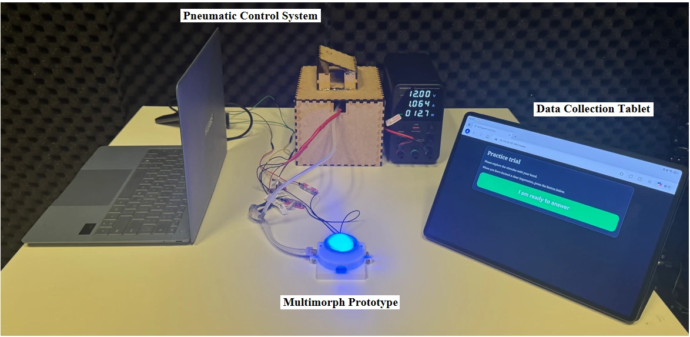

MultiMorph
Investigating How Coloured Illumination Shapes the Affective Experience of Pneumatic Deformation.

Background & Motivation
Shape-changing interfaces can communicate affect through physical deformation. My Master's thesis investigated how adding coloured illumination changes the experience of the same pneumatic movement, and how the relation between colour and movement influences perceived coherence and pleasure. The project developed MultiMorph, a soft research platform that presents visual colour and tactile deformation through one physical interface.
System Design & User Study
MultiMorph extends triMorph's pneumatic actuation principle with a transparent TPU core, integrated LEDs and a housing that keeps illumination visible while participants explore the deforming surface through touch. The platform combines red, blue and LED-off illumination with static spiky, static rounded, 1 Hz and 0.1 Hz deformation. I conducted a controlled within-participants study with 24 adults, covering all 12 combinations across 288 formal trials. Participants rated pleasure and arousal on seven-point scales, and rated perceived light-tactile fit for coloured trials. The system also recorded time-to-clarity.
Key Findings & Design Implications
Movement rate was most clearly associated with arousal: 79% of participants gave higher average arousal ratings to the 1 Hz programme than to the 0.1 Hz programme. Blue paired with 0.1 Hz deformation increased pleasure relative to the same movement with the LEDs off. The predefined aligned dynamic set, red with 1 Hz and blue with 0.1 Hz, received higher perceived fit and pleasure ratings than the reversed pairings, with the slow comparison contributing most strongly. These findings support designing colour in relation to a particular deformation and considering activation, pleasure and perceived coherence as distinct aspects of the experience.
Colour, movement and their coordination should be considered together when designing multisensory shape-changing experiences.